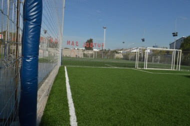
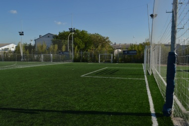
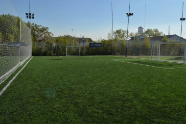
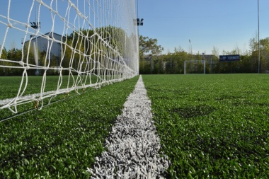
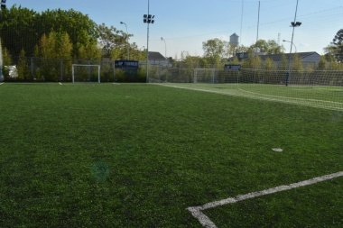
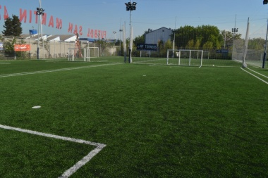

Sobre Nosotros
Bienvenidos a Liga X, la liga de fútbol amateur que ha sido el corazón del fútbol comunitario durante años. En Liga X, vivimos y respiramos fútbol, ofreciendo a jugadores de todos los niveles la oportunidad de competir, mejorar y disfrutar del hermoso juego en un ambiente amigable y emocionante.
Nuestra Historia
Fundada con la pasión por el fútbol y el deseo de crear una comunidad deportiva inclusiva, Liga X ha crecido hasta convertirse en una referencia en el ámbito del fútbol amateur. Desde nuestros humildes comienzos, hemos trabajado incansablemente para proporcionar a los jugadores un espacio donde puedan perseguir su amor por el fútbol, sin importar su edad o nivel de habilidad.
Comunidad y Valores
En Liga X, creemos en la importancia de los valores deportivos y la comunidad. Fomentamos el respeto, la deportividad y la inclusión, asegurándonos de que todos los participantes se sientan bienvenidos y valorados. Nuestra misión es crear un entorno donde el fútbol sea una fuerza positiva que una a las personas.
Liga X - Donde el fútbol es para todos
Nuestras Instalaciones
Contamos con dos predios de primer nivel, equipados con campos de césped de alta calidad, iluminación adecuada para partidos nocturnos y todas las comodidades necesarias para jugadores y espectadores. Nuestras instalaciones están diseñadas para proporcionar la mejor experiencia posible tanto dentro como fuera del campo.      